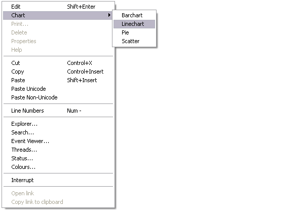

The Session popup menu (⎕SE.popup) is displayed by clicking the right mouse button anywhere in the Session window. If the mouse pointer is over a visible object name, the popup menu allows you to edit, print, delete it or view its properties. Note that the name of the pop-up menu is specified by the Popup property of ⎕SE.

Table 44: Session popup menu operations
| Item | Action | Description |
|---|---|---|
| Edit | [Edit] | Edits the current object |
| Chart Wizard | ⎕se.Chart.DoChart | Opens Chart Wizard on current object |
| [ObjPrint] | Prints the current object | |
| Delete | [ObjDelete] | Erases the current object |
| Properties | [GUIHelp] | Displays the Object Properties dialog box for the current object |
| Help | [Help] | Displays the help topic associated with the current object or the APL symbol under the cursor |
| Cut | [Cut] | Deletes selected text |
| Copy | [Copy] | Copies the selection to the clipboard |
| Paste | [Paste] | Pastes the text contents of the clipboard into the session log at the current location. The new lines are marked and may be executed by pressing Enter. |
| Paste Unicode | [PasteUnicode] | Same as Paste, but gets the Unicode text from the clipboard and converts to ⎕AV |
| Paste Non-Unicode | [PasteAnsi] | Same as Paste, but gets the ANSI text from the clipboard and converts to ⎕AV |
| Line Numbers | [LineNumbers] | Toggles line numbers on/off |
| Align Comments | [AlignComments] | Aligns Comments to current column |
| Explorer | [Explorer] | Displays the Workspace Explorer |
| Search | [WSSearch] | Displays the Find Objects tool |
| Event Viewer | [EventViewer] | Displays the Event Viewer |
| Threads | [Threads] | Displays the Threads Tool |
| Status | [Status] | Displays the Status window |
| Colours | [ChooseColors] | Displays the Colour Selection dialog |
| Interrupt | [Interrupt] | Generates a weak interrupt |
| Open link | [OpenLink] | Opens the URL or link using the appropriate program. See Underline URLs and links |
| Copy link to clipboard | [CopyLink] | Copies the URL or link to the Windows Clipboard. See Underline URLs and links |